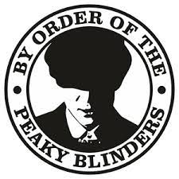

historia dos malditos peak blinders
Com personagens fictícios entre fatos e personalidades da vida real, a série Peaky Blinders navega pela
história europeia do início do século XX, indo desde o fim da I Guerra Mundial, passando pela ascensão do
comunismo e dos
levantes operários, até culminar nos horrores do fascismo e do nazismo.21 de jun. de 2022 
link para ver a série abaixo
assistir peak blindersmeu e-mail
e-mailbaixar imagem